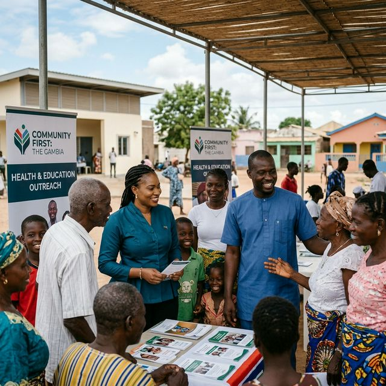
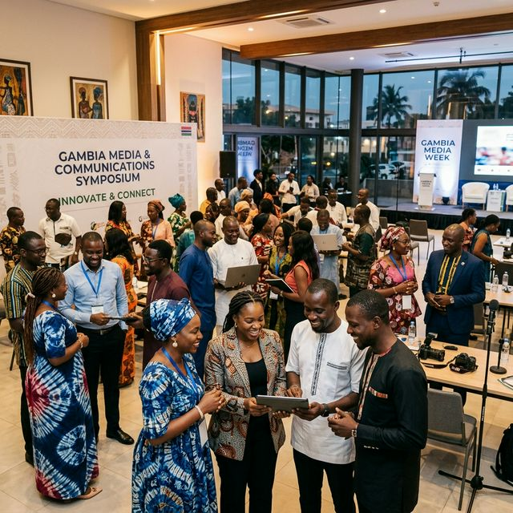
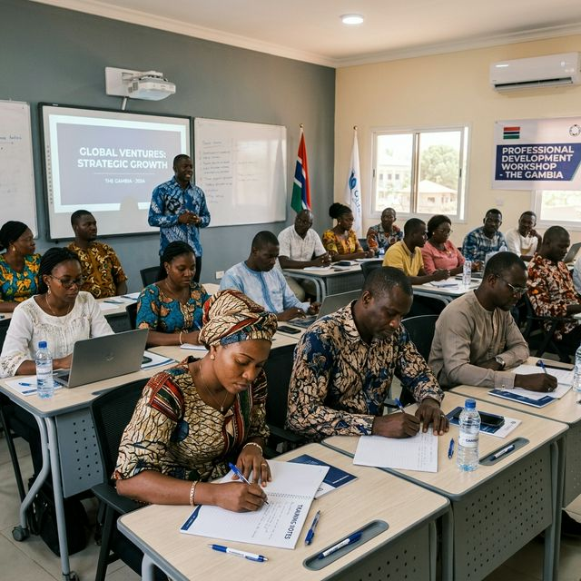

What We Do
Comprehensive communication and media services designed specifically for the African Diaspora and immigrant community.
Language Translation & Interpretation
Our expertise encompasses a comprehensive suite of language translation solutions, including in-person and virtual translation services, as well as document translation.
These services are pivotal in ensuring critical outreach information is accessible and comprehensible to the African Diaspora and larger immigrant community.


Audio-Visual Services
We specialize in crafting compelling audiovisual content tailored to effectively communicate with the African Diaspora community. Our team excels at creating messages and multimedia content that resonate with the community, facilitating more meaningful engagement.
This is achieved through the production of documentaries, films, songs, podcasts and outreach materials on different subject matters affecting the African Diaspora and immigrant community.
Youth & Workforce Development
Janta is committed to the growth and advancement of African Diaspora youth and enriching the immigrant workforce. We provide a platform for them to acquire essential audiovisual skills such as camera work, video editing, photography and event organizing.
Also training on STEM related skills such as graphic design, web design, journalism/vlogging, coding etc. Additionally, we offer opportunities for these young talents to actively contribute to their communities, fostering personal growth and community development.

Training for Government & Private Sector
Janta offers comprehensive training programs tailored to educate both government and private sector entities on the art of meaningful and culturally sensitive engagement with the African Diaspora and immigrant communities.
Our training is meticulously designed to equip organizations with the skills and insights needed to establish genuine, trust-based relationships with these communities, effectively addressing their concerns, anxieties and deeply rooted socio-cultural values. Through these programs, we empower entities to bridge gaps, foster understanding and cultivate authentic connections.
Need a custom solution?
We tailor every project to your community's unique needs.